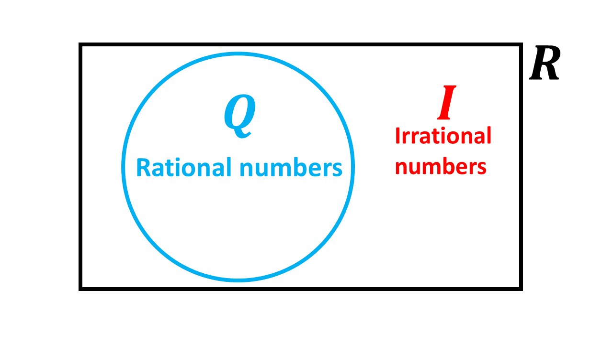

A set is a collection of well-defined objects (called elements or members). Sets are usually denoted or named with capital letters with the elements belonging to the set in curly brackets, hence given a set A containing odd numbers less than 10, we write, \[A = \{1, 3, 5, 7, 9\}\]
From this, we can say that, given any number or object, \(x\), found in the set A
Well-defined means there should be no ambiguity with regards to the description of the set. For instance, when we describe a set B as being a set that contains books, then we should not find a pencil or any other object besides books in the set B.
THE COMPLEMENT OF A SET
When we gather every other element that is not found in a given set, we have a collection of elements outside of that set. This new set or collection of elements is termed as the complement of the set.
For instance, in our set A above, the complement of the set A, denoted as \((A^\prime)\), is a collection of all the numbers that are not odd numbers less than 10.
\(A^\prime \Rightarrow \) read as A complement
THE UNIVERSAL SET, (\(\mathbb{U}\))
When we put the elements of any given set and its complement together, then we have what we call a universal set, denoted by the symbol, \(\mathbb{U}\).
The universal set is the set that contains all the elements under consideration.
From our example above, we can therefore say that, \[A + A^\prime = \mathbb{U}\]
That is, the elements under consideration are the set of odd numbers less than 10 (found in the set A) and the set of numbers which are not odd numbers less than 10 (found in the complement of A, that is, \(A^\prime\)).
THE CARDINALITY OF A SET
The number of elements within any given set, say set A, is given as below:
\[\mathbf{n(A) = n}\]
We call \(n(A)\) the cardinality of the set. In our set A above, the cardinality of set A is 5, that is;
\[n(A) = 5\]
If a set has a finite cardinality, we say that the set is a finite set. For instance, set A above is a finite set as it has 5 elements.
A finite set is a set in which all its members are known, or a set whose last element is known.
When a set has an infinite cardinality, we say that the set is an infinite set.
An infinite set is a set whose last element is not known. Example, the set of natural numbers, \((\mathbb{N})\). For infinite sets, we use the infinity \((\infty)\) symbol to represent their cardinality. So, for the set of natural numbers, we have: \[n(N) = \infty\]
That is, the set of natural numbers has an infinite number of elements.
There are 3 basic ways that we can describe a set. They are:
1. Word description:
Where we use sentences and statements or phrases to describe given sets.
Eg. 1. \(B =\) \(\{\)whole numbers from 20 to 30\(\}\)
\(\hspace{0.8cm}\) 2. \(M =\) \(\{\)factors of 63\(\}\)
\(\hspace{0.8cm}\) 3. \(K =\) \(\{\)odd numbers less than 13\(\}\)
2. Listing:
With listing, the elements are listed with a comma (,) separating each of the elements in the
set.
Let's list the elements in the sets described above:
Eg. 1. \(B =\) \(\{\)20, 21, 22, 23, 24, 25, 26, 27, 28, 29, 30\(\}\)
\(\hspace{0.8cm}\) 2. \(M =\) \(\{\)1, 3, 7, 9, 21, 63\(\}\)
\(\hspace{0.8cm}\) 3. \(K =\) \(\{\)1, 3, 5, 7, 9, 11\(\}\)
3. Set builder notation.
Set builder notation is when we use mathemtical and logical notations to build sets.
Let's use set builder notation to build the sets listed above:
Eg. 1. \(B =\) \(\{x: 20 \le x \le 30, x\) is a whole number\(\}\)
\(\hspace{0.8cm}\) 2. \(M =\) \(\{x:x\) \(\in\) factors of 63\(\}\)
\(\hspace{0.8cm}\) 3. \(K =\) \(\{x:x < 13, x \in\) odd numbers\(\}\)
Note
\(\mathbf{x:x < 13}\): You say "x such that x is less than 13."
THE EMPTY SET, \((\emptyset)\)
The empty set, sometimes called null set, is a set that contains no elements. It is denoted by the symbol \(\emptyset\), or \(\{ \ \}\). This implies that the cardinality of the empty set is 0. \[n(\emptyset) = 0\]
A set which is not empty is called a non-empty set.
THE UNIT SET
A unit set is a set that contains only one (1) element, or member.
Examples are the sets below:
1. \( \ T = \{1\}\)
2. \( \ R = \{0\}\)
3. \( \ A = \{2\}\)
4. \( \ C = \{cup\}\)
5. \( \ Y = \{\emptyset\}\)
EQUAL SETS
Two sets that have the same elements are called equal sets.
Example, given set \(A = \{1, 2, 3, 4, 5\}\) and set \(B = \{5, 3, 4, 2, 1\}\), we can say that, set A is equal to set B as the elements that make up set \(A\) are the same elements that make up set \(B\).
Mathematically, we write: \[A = B\]
It therefore implies that, if two sets do not have the same elements, then they are not equal sets. For instance, given another set, say \(C = \{a, b, c, d, e\}\), we can say that set A is not equal to set C.
Mathematically, we write: \[A \neq C\]
Why?
Though the cardinality of the sets are the same, that is five (5), the sets do not contain similar elements.
\(A = \{1, 2, 3, 4, 5\}\) and
\(C = \{a, b, c, d, e\}\)
This leads us to equivalent sets.
EQUIVALENT SETS
When two non-equal sets have the same cardinality, like set \(A\) and set \(C\) above, they are called equivalent sets.
\(A = \{1, 2, 3, 4, 5\}\)
\(\Rightarrow n(A) = 5\)
\(C = \{a, b, c, d, e\}\)
\(\Rightarrow n(C) = 5\)
Set \(A\) and set \(C\) are not equal sets, but they have the same number of elements (5) in their sets, hence set \(A\) and set \(C\) are called equivalent sets.
A subset can simply be defined as a set that belongs to a bigger set. Subsets are formed by taking or listing a part of the elements inside of a parent-set in another curly bracket.
A subset can contain as many elements as there are in the bigger set (or parent-set) under consideration.
Every element or combination (group) of elements within any given set can be described as a subset of the set.
For example, given the set \(A = \{1, 3, 5, 7, 9\}\), some of the subsets or smaller sets that can be formed from this set are \(\{1, 3\}\), \(\{1, 3, 5\}\), \(\{5, 7, 9\}\), \(\{9\}\), etc.
Think and come up with other subsets that can be formed from this set A and show it to your friends.
Example 1
Kofi listed the prime numbers between 1 and 20 in a set A. Then he listed the prime numbers between 1 and 10 in another set B. Describe the set B in terms of the set A.
Solution
Set \(A = \{\)prime numbers between 1 and 20\(\}\)
\(\Rightarrow A = \{2, 3, 5, 7, 11, 13, 17, 19\}\)
Set \(B = \{\)prime numbers between 1 and 10\(\}\)
\(\Rightarrow B = \{2, 3, 5, 7\}\)
Since all the elements in \(B\) can be found in \(A\), we can therefore say that, "Set B is a subset of set A."
And mathematically,
\(\Rightarrow \mathbf{B \subseteq A}\)
We can also write:
\(\Rightarrow \mathbf{B \subset A}\) \(\Rightarrow\) which is read as \(B\) is a proper subset of \(A\).
A set is said to be a proper subset of its parent set if all the elements in the set can be found in the parent set, and also the set is not equal to its parent set. That is:
If \( B \subset A \), it implies that:
1. \( B \subseteq A \)
2. \( B \neq A \)
The above statements read, if B is a proper subset of A, \((B \subset A)\), it implies that B is a subset of A, \((B \subseteq A)\), and B is not equal to A, \((B \neq A)\).
Number of Subsets \((2^n)\)
Given any set, say A, the total number of subsets that can be formed using the elements within the set can be calculated using the formular below:
\[\mathbf{Number\ of \ subsets = 2^n}\]
Where \(\mathbf{n}\) represents the cardinality or the number of elements in the given set.
A set of all the subsets that can be formed within any set is termed as the power set.
Note:
There are two types of numbers. We have:
1. Complex numbers and
2. Real numbers
Complex numbers are usually made up of a real part and an imaginary part. They are numbers written in the form \[a + bi\]
where
\(a \Rightarrow\) the real part of the complex number and
\(b \Rightarrow\) the imaginary part of the complex number
\(i \Rightarrow \sqrt{-1}\)
We will talk more about complex numbers in a later lesson.
The set of Real numbers is the set that contains all rational (Q) and irrational (I) numbers. It is represented by the symbol \(\mathbb{R}\).
It is the set that contains fractions, surds, integers etc.
Most of the lessons that you have taken to this point in Mathematics have been under the set of realnumbers.
The diagram below describes a Venn diagram showing the set of Real numbers and its main or major subsets. The rectangle represents the set of real numbers, while the circle represents the set of Rational numbers. The numbers outside of the circle represents the set of Irrational numbers, that is, the complement of the set of rational numbers.
NOTE:
The number line is sometimes called the real number line as it used to model the set of real numbers.
Given the set of real numbers, the following numbers can be discussed or described as subsets of the set of real numbers.
These subsets include but not limited to the following:
\((a)\) Irrational Numbers
\((b)\) Rational Numbers
\((c)\) Integers
\((d)\) Whole Numbers
\((e)\) Counting or Natural numbers.
Irrational numbers are non-repeating or non-terminating decimals. They can also be thought of as numbers that cannot be expressed as fractions with a rational denominator. This set usually includes surds and other decimals that do not recur nor terminate.
The symbol for the set of irrational numbers is (\(\mathbf{I}\)) and can sometimes be represented by (\(\mathbf{Q^\prime}\)) as the set of irrational numbers is the complement of the set of rational numbers.
Examples of irrational numbers are \(\pi\), \(\sqrt{2}\), \(\sqrt{3}\), \(\frac{1}{\sqrt{5}}\) etc.
NOTE:
The set of irrational numbers is a subset of the set of real numbers, as shown in the expression below:
\[ I \subset \mathbb{R} \]
Rational numbers are numbers that can be expressed as fractions or in the form \(\frac{a}{b}\).
They can also be thought of as fractions or decimals that terminate or repeat (or recur).
Examples are 0.5, \(\frac{1}{8}\), 68%, 3.75, 69, etc.
A decimal is said to be recurring when one or more digits to the right of the decimal point keeps repeating. Examples are 0.333\(\dots\), 0.555\(\dots\) etc.
Integers are defined as the set of negative and positive whole numbers. Remember, that this set also
includes the number zero (0).
E.g. \(Z=\){\(\dots\), -3, -2, -1, 0, 1, 2, 3, \(\dots\)}
Whole numbers are non-negative integers. Whole numbers include the number zero (0).
Eg. \(W =\) {0, 1, 2, 3, 4, \(\dots\)}
Natural numbers are positive integer values. They do not include the number zero (0).
Natural numbers are the numbers that we normally use to count, hence they are sometimes
termed as counting numbers.
E.g. \(N =\){1, 2, 3, 4, \(\dots\)}
Mathematically, the above definitions imply that;
\[N \subset W \subset Z \subset Q \subset \mathbb{R}\]
\(\ \subset \ \Rightarrow\) is read as "is a subset of"
Test yourself on what you have learnt so far. Click on the link below when you are ready.
Kindly contact the administrator on 0208711375 for the link to the test.
To advertise on our website kindly call on 0208711375 or 0249969740.